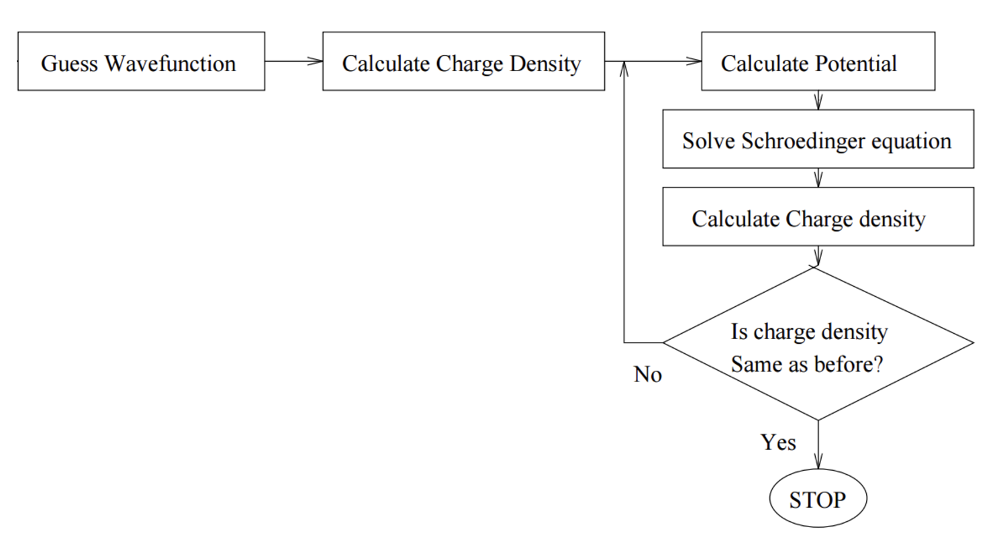
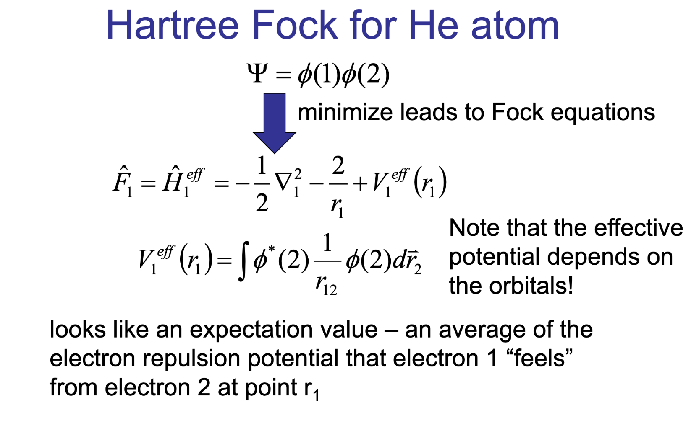
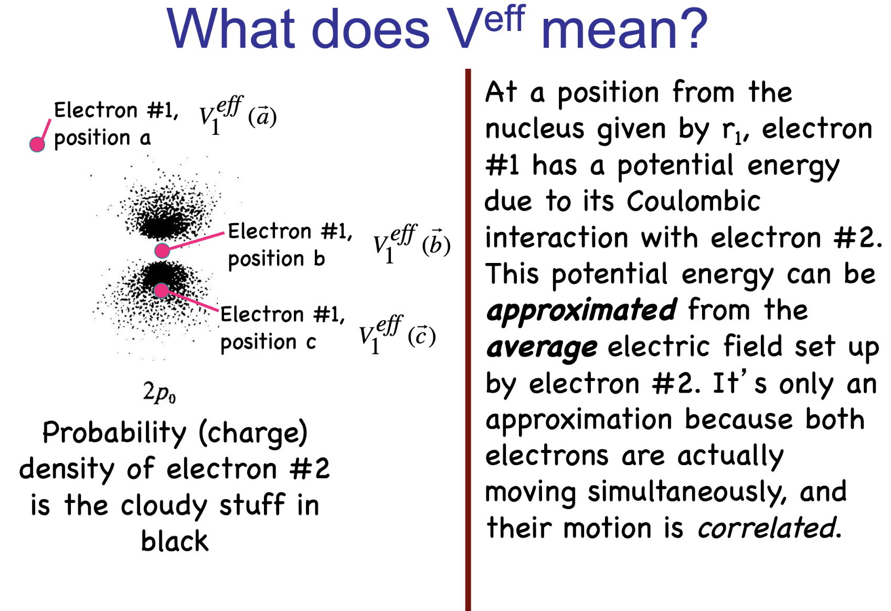
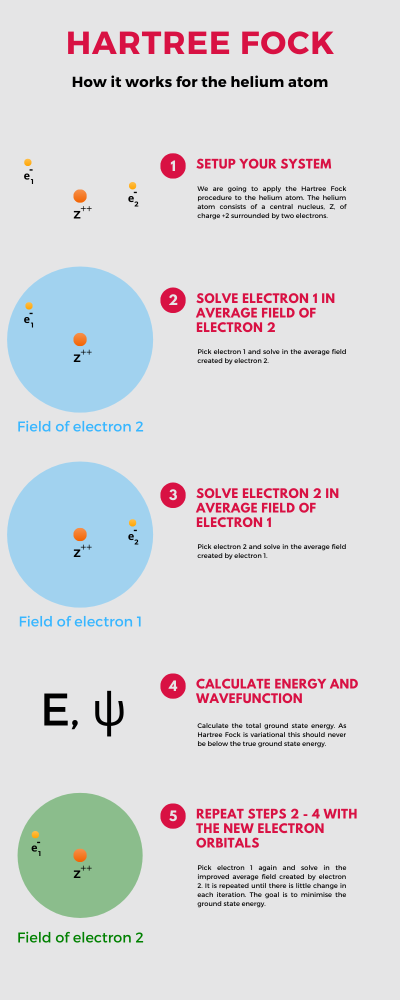
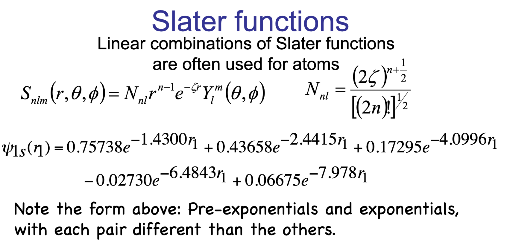
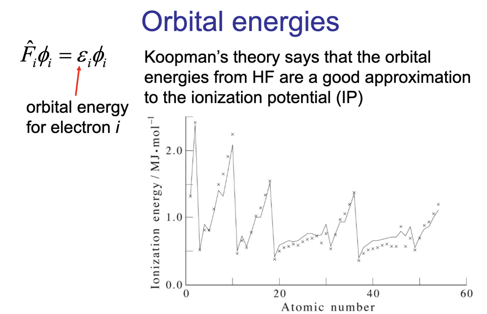

Hartree-Fock#
Objective: Approximate the electronic structure of atoms and molecules by treating electrons as independent particles in an average field created by all other electrons.
Motivation: The Schrödinger equation for multi-electron systems is too complex to solve exactly.
Wavefunction#
The total wavefunction \(\Psi(1, 2, \cdots, N)\) is approximated as a single Slater determinant to satisfy the Pauli exclusion principle. $\( \Psi(1, 2, \cdots, N) = \frac{1}{\sqrt{N!}} \begin{vmatrix} \psi_1(1) & \psi_2(1) & \cdots & \psi_N(1) \\ \psi_1(2) & \psi_2(2) & \cdots & \psi_N(2) \\ \vdots & \vdots & \ddots & \vdots \\ \psi_1(N) & \psi_2(N) & \cdots & \psi_N(N) \end{vmatrix} \)$
Hartree-Fock Equations#
Each molecular orbital (MO) \(\psi_i\) satisfies the self-consistent field (SCF) equation: $\( \hat{F} \psi_i = \varepsilon_i \psi_i \)\( where \)\hat{F}\( is the **Fock operator** and \)\varepsilon_i$ are the orbital energies.
Fock Operator#
The Fock operator \(\hat{F}\) is a sum of the one-electron Hamiltonian and a mean-field potential:
\[ \hat{F} = \hat{h} + \sum_{j} \left( \hat{J}_j - \hat{K}_j \right) \]\(\hat{h}\): Kinetic energy and nuclear attraction operators.
\(\hat{J}_j\): Coulomb operator (electron-electron repulsion).
\(\hat{K}_j\): Exchange operator (arises from antisymmetry requirement of the wavefunction).
Self-Consistent Field (SCF) Method#
Guess initial molecular orbitals \(\psi_i\).
Construct the Fock operator \(\hat{F}\) using the current \(\psi_i\).
Solve the Hartree-Fock equation \(\hat{F} \psi_i = \varepsilon_i \psi_i\) to obtain new orbitals \(\psi_i\).
Repeat steps 2-3 until convergence (orbitals do not change significantly).
3. Total Energy of the System#
Total electronic energy \(E_{HF}\) in the Hartree-Fock approximation:
\[ E_{HF} = \sum_{i} \langle \psi_i | \hat{h} | \psi_i \rangle + \frac{1}{2} \sum_{i,j} \left( J_{ij} - K_{ij} \right) \]\(J_{ij}\): Coulomb integral.
\(K_{ij}\): Exchange integral.
4. Strengths and Limitations#
Strengths#
Efficient: Reduces the complexity of the multi-electron Schrödinger equation.
Exchange interactions: Includes effects of exchange through the Slater determinant.
Limitations#
No dynamic correlation: Electron-electron correlation is only partially captured.
Post-Hartree-Fock methods: Needed for more accurate energy calculations (e.g., MP2, CCSD).
5. Summary#
Hartree-Fock approximates the multi-electron wavefunction as a Slater determinant.
The Fock operator accounts for one-electron and mean-field electron-electron interactions.
The SCF procedure ensures convergence to a consistent set of orbitals.
While efficient, it lacks dynamic correlation, motivating the development of post-Hartree-Fock methods.
Important Equations
Slater Determinant:
\[\begin{split} \Psi(1, 2, \cdots, N) = \frac{1}{\sqrt{N!}} \begin{vmatrix} \psi_1(1) & \psi_2(1) & \cdots & \psi_N(1) \\ \psi_1(2) & \psi_2(2) & \cdots & \psi_N(2) \\ \vdots & \vdots & \ddots & \vdots \\ \psi_1(N) & \psi_2(N) & \cdots & \psi_N(N) \end{vmatrix} \end{split}\]Hartree-Fock Equations:
\[ \hat{F} \psi_i = \varepsilon_i \psi_i \]Fock Operator:
\[ \hat{F} = \hat{h} + \sum_{j} \left( \hat{J}_j - \hat{K}_j \right) \]Electronic Energy:
\[ E_{HF} = \sum_{i} \langle \psi_i | \hat{h} | \psi_i \rangle + \frac{1}{2} \sum_{i,j} \left( J_{ij} - K_{ij} \right) \]

HF on example of He atom#





Practical use of HF#
We need to install a few things before we get started
%pip install -q pyscf py3DMol plotly kaleido
Note: you may need to restart the kernel to use updated packages.
#@title PYSCF code to calcualte energies of Alkali Metals
from pyscf import gto, scf
# Function to calculate orbitals and energies for a given atom
def calculate_orbitals_energies(atom_symbol):
"""
Calculate the orbitals and energies for a given atom using PySCF.
Parameters:
atom_symbol (str): Symbol of the atom (e.g., 'He', 'Li').
Returns:
dict: A dictionary containing the total energy, MO coefficients, and MO energies.
"""
# Define the atom and basis set
mol = gto.Mole()
mol.atom = [(atom_symbol, (0, 0, 0))] # Specify the atom and its position
mol.basis = 'sto-3g' # Basis set
mol.spin = 1 # 2S = 1, since Li, Na, K has 1 unpaired electron
mol.build()
# Perform Hartree-Fock calculation
mf = scf.RHF(mol) # Restricted Hartree-Fock
total_energy = mf.kernel() # Calculate the total electronic energy
# Extract molecular orbital coefficients and energies
mo_coefficients = mf.mo_coeff # MO coefficients
mo_energies = mf.mo_energy # MO energies
# Determine the HOMO (highest occupied molecular orbital) energy
num_electrons = mol.nelectron # Total number of electrons in the system
homo_index = num_electrons // 2 - 1 # HOMO index for closed-shell systems (0-indexed)
homo_energy = mo_energies[homo_index] if homo_index >= 0 else None
# Generate the cube file for the HOMO
if homo_index >= 0:
cube_filename = f"{atom_symbol}_HOMO.cube"
cubegen.orbital(mol, cube_filename, mf.mo_coeff[:, homo_index])
print(f"HOMO cube file saved as: {cube_filename}")
# Visualize the cube file using py3Dmol
cube_view = py3Dmol.view(width=400, height=400)
with open(cube_filename, 'r') as file:
cube_data = file.read()
cube_view.addVolumetricData(cube_data, "cube", {'isoval': -0.03, 'color': "red", 'opacity': 0.85})
cube_view.addVolumetricData(cube_data, "cube", {'isoval': 0.03, 'color': "blue", 'opacity': 0.85})
cube_view.addModel(mol.tostring(format="xyz"), 'xyz')
cube_view.setStyle({'stick': {}, "sphere": {"radius": 0.4}})
cube_view.setBackgroundColor('0xeeeeee')
cube_view.show()
results = {
'atom': atom_symbol,
'total_energy': total_energy,
'mo_coefficients': mo_coefficients,
'mo_energies': mo_energies,
'homo_energy': homo_energy
}
return results
# List of atoms to calculate
atoms = ['Li', 'Na']
# Store the results for each atom
results_dict = {}
# Loop over each atom and calculate orbitals and energies
for atom in atoms:
results = calculate_orbitals_energies(atom)
results_dict[atom] = results
print(f"Results for {atom} atom:")
print("Total Energy (Hartree):", results['total_energy'])
print("Molecular Orbital Energies (Hartree):", results['mo_energies'])
print("HOMO energy (Hartree):", results['homo_energy'])
#print("Molecular Orbital Coefficients:")
#print(results['mo_coefficients'])
#print("\n" + "-"*50 + "\n")
print("\n")
converged SCF energy = -7.31552598128109
---------------------------------------------------------------------------
NameError Traceback (most recent call last)
Cell In[3], line 9
7 # Loop over each atom and calculate orbitals and energies
8 for atom in atoms:
----> 9 results = calculate_orbitals_energies(atom)
10 results_dict[atom] = results
12 print(f"Results for {atom} atom:")
Cell In[2], line 42, in calculate_orbitals_energies(atom_symbol)
40 if homo_index >= 0:
41 cube_filename = f"{atom_symbol}_HOMO.cube"
---> 42 cubegen.orbital(mol, cube_filename, mf.mo_coeff[:, homo_index])
43 print(f"HOMO cube file saved as: {cube_filename}")
45 # Visualize the cube file using py3Dmol
NameError: name 'cubegen' is not defined